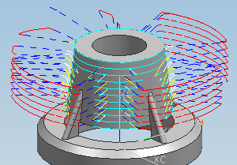

预计完成此练习需要：7–10 分钟
在这个练习中，您将创建一个使用曲面区域驱动方法以及垂直于驱动刀轴选项的可变轴曲面轮廓铣工序，用于精加工部件。在这个工序中，您将只定义驱动几何体(不定义部件几何体)，由于是直接在驱动几何体上创建刀轨，您不需要定义投影矢量。

开始 使用垂直于驱动刀轴创建一个工序
参见帮助→CAM (加工)→铣加工→曲面轮廓铣→可变轴曲面轮廓铣→刀轴→垂直于驱动
参见帮助→CAM (加工)→铣加工→曲面轮廓铣→可变轴曲面轮廓铣→驱动方法→曲面区域驱动方法